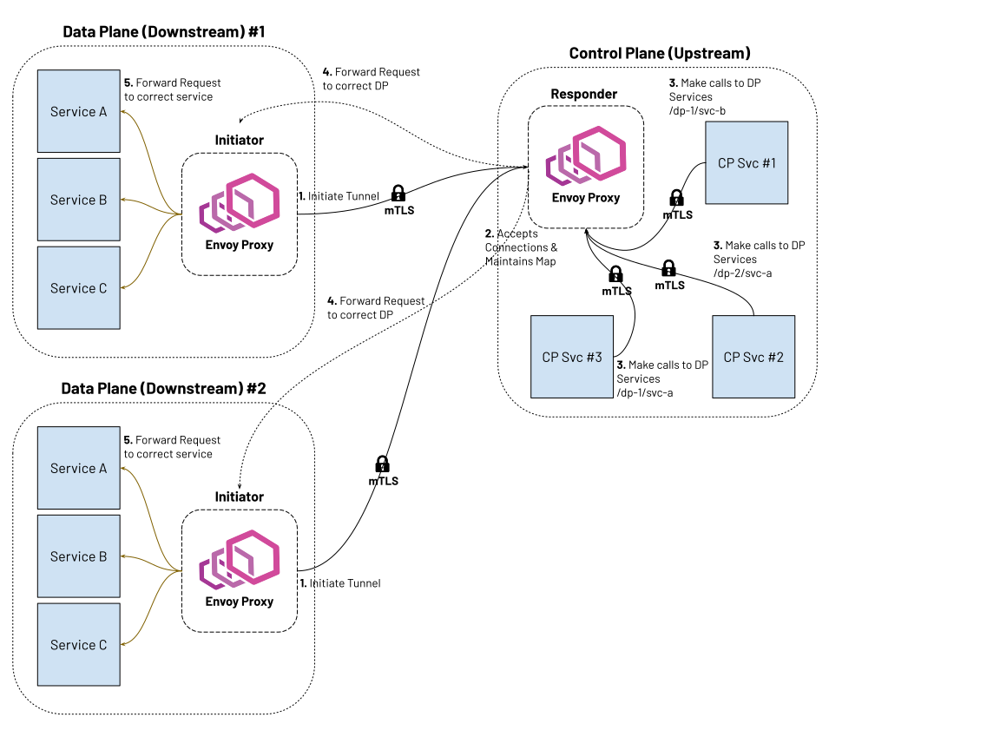

Reverse tunnels overview
Attention
The reverse tunnels feature is experimental and is currently under active development.
Envoy supports reverse tunnels that enable establishing persistent connections from downstream Envoy instances to upstream Envoy instances without requiring the upstream to be directly reachable from the downstream. This feature is particularly useful in scenarios where downstream instances are behind NATs, firewalls, or in private networks, and need to communicate with upstream instances in public networks or cloud environments.
Reverse tunnels invert the typical connection model: the downstream Envoy initiates TCP connections to upstream Envoy instances and keeps them alive for reuse. These connections are established using a handshake protocol, after which traffic can be forwarded bidirectionally. Services behind the upstream Envoy can send requests through the tunnel to downstream services behind the initiator Envoy, effectively treating the normally unreachable downstream services as if they were directly accessible.
{kind=link}
Reverse tunnels require the following extensions:
Downstream socket interface: Registered as a bootstrap extension on the initiator Envoy to initiate and maintain reverse tunnels.
Upstream socket interface: Registered as a bootstrap extension on the responder Envoy to accept and manage reverse tunnels.
Reverse tunnel network filter: Configured on the responder Envoy to accept and validate reverse tunnel handshake requests.
Reverse connection cluster: Configured on the responder Envoy to route data requests to downstream nodes through established reverse tunnels.
Initiator configuration (downstream Envoy)
The initiator Envoy (downstream) requires the following configuration components to establish reverse tunnels:
Downstream socket interface
8- name: envoy.bootstrap.reverse_tunnel.downstream_socket_interface
9 typed_config:
10 "@type": >-
11 type.googleapis.com/envoy.extensions.bootstrap.reverse_tunnel.downstream_socket_interface.v3.DownstreamReverseConnectionSocketInterface
12 stat_prefix: "downstream_reverse_connection"
This extension enables the initiator Envoy to establish and maintain reverse tunnel connections to the responder Envoy.
Reverse tunnel listener
The reverse tunnel listener triggers reverse connection initiation to the upstream Envoy and encodes
identity metadata for the local Envoy instance. The listener’s address field uses a special rc://
format to specify connection parameters, and its route configuration defines which downstream services
are reachable through the reverse tunnel.
17 - name: reverse_conn_listener
18 listener_filters_timeout: 0s
19 listener_filters: []
20 # Use custom address with reverse connection metadata encoded in URL format
21 address:
22 socket_address:
23 # This encodes: src_node_id, src_cluster_id, src_tenant_id
24 # and remote clusters: upstream-cluster with 1 connection
25 address: "rc://downstream-node:downstream-cluster:downstream-tenant@upstream-cluster:1"
26 port_value: 0
27 # Use custom resolver that can parse reverse connection metadata
28 resolver_name: "envoy.resolvers.reverse_connection"
29 filter_chains:
30 - filters:
31 - name: envoy.filters.network.http_connection_manager
32 typed_config:
33 "@type": >-
34 type.googleapis.com/envoy.extensions.filters.network.http_connection_manager.v3.HttpConnectionManager
35 stat_prefix: reverse_conn_listener
36 route_config:
37 virtual_hosts:
38 - name: backend
39 domains:
40 - "*"
41 routes:
42 - match:
43 prefix: '/downstream_service'
44 route:
45 cluster: downstream-service
46 http_filters:
47 - name: envoy.filters.http.router
48 typed_config:
49 "@type": >-
50 type.googleapis.com/envoy.extensions.filters.http.router.v3.Router
The special rc:// address format encodes connection and identity metadata:
rc://src_node_id:src_cluster_id:src_tenant_id@remote_cluster:connection_count
In the example above, this expands to:
src_node_id:downstream-node- Unique identifier for this specific Envoy instance.src_cluster_id:downstream-cluster- Logical grouping identifier for this Envoy and its peers.src_tenant_id:downstream-tenant- Tenant identifier for multi-tenant isolation.remote_cluster:upstream-cluster- Name of the upstream cluster to connect to.connection_count:1- Number of reverse connections to establish to the remote cluster.
The identifiers serve the following purposes:
src_node_id: Each node must have a unique
src_node_idacross the entire system to ensure proper routing and connection management. Data requests can target a specific node by its ID.src_cluster_id: Multiple nodes can share the same
src_cluster_id, forming a logical group. Data requests sent using the cluster ID will be load balanced across all nodes in that cluster. Thesrc_cluster_idmust not collide with anysrc_node_id.src_tenant_id: Used in multi-tenant environments to isolate traffic and resources between different tenants or organizational units.
The downstream-service cluster in the example refers to the service behind the initiator Envoy that will be accessed via reverse tunnels from services behind the responder Envoy.
69 - name: downstream-service
70 type: STRICT_DNS
71 connect_timeout: 30s
72 load_assignment:
73 cluster_name: downstream-service
74 endpoints:
75 - lb_endpoints:
76 - endpoint:
77 address:
78 socket_address:
79 address: downstream-service
80 port_value: 80
Upstream cluster
Each upstream Envoy to which reverse tunnels should be established requires a cluster configuration. This cluster can be defined statically in the bootstrap configuration or added dynamically via the Cluster Discovery Service (CDS).
54 - name: upstream-cluster
55 type: STRICT_DNS
56 connect_timeout: 30s
57 load_assignment:
58 cluster_name: upstream-cluster
59 endpoints:
60 - lb_endpoints:
61 - endpoint:
62 address:
63 socket_address:
64 address: upstream-envoy # Address of upstream-envoy
65 port_value: 9000 # Port for rev_conn_api_listener
Multiple cluster support
To establish reverse tunnels to multiple upstream clusters simultaneously, use the additional_addresses
field on the listener. Each address in this list specifies an additional upstream cluster and the number
of connections to establish to it.
name: multi_cluster_listener
address:
socket_address:
address: "rc://node-1:downstream-cluster:tenant-a@cluster-a:2"
port_value: 0
additional_addresses:
- address:
socket_address:
address: "rc://node-1:downstream-cluster:tenant-a@cluster-b:3"
port_value: 0
filter_chains:
- filters:
- name: envoy.filters.network.tcp_proxy
typed_config:
"@type": type.googleapis.com/envoy.extensions.filters.network.tcp_proxy.v3.TcpProxy
stat_prefix: tcp
cluster: dynamic_cluster
This configuration establishes:
2 connections to
cluster-a3 connections to
cluster-b
TLS configuration
For secure reverse tunnel establishment, configure a TLS transport socket on the upstream cluster. The example below shows mutual TLS (mTLS) configuration with certificate pinning:
name: upstream-cluster
type: STRICT_DNS
connect_timeout: 30s
transport_socket:
name: envoy.transport_sockets.tls
typed_config:
"@type": type.googleapis.com/envoy.extensions.transport_sockets.tls.v3.UpstreamTlsContext
common_tls_context:
tls_certificates:
- certificate_chain:
filename: "/etc/ssl/certs/client-cert.pem"
private_key:
filename: "/etc/ssl/private/client-key.pem"
validation_context:
filename: "/etc/ssl/certs/ca-cert.pem"
verify_certificate_spki:
- "NdQcW/8B5PcygH/5tnDNXeA2WS/2JzV3K1PKz7xQlKo="
alpn_protocols: ["h2", "http/1.1"]
sni: upstream-envoy.example.com
This configuration provides mutual TLS authentication between the initiator and responder Envoys. The client certificate authenticates the initiator, while the server certificate and SPKI pinning authenticate the responder. The ALPN configuration negotiates HTTP/2, which is required for reverse tunnel operation.
Responder configuration (upstream Envoy)
The responder Envoy (upstream) requires the following configuration components to accept reverse tunnels:
Upstream socket interface
8- name: envoy.bootstrap.reverse_tunnel.upstream_socket_interface
9 typed_config:
10 "@type": >-
11 type.googleapis.com/envoy.extensions.bootstrap.reverse_tunnel.upstream_socket_interface.v3.UpstreamReverseConnectionSocketInterface
12 stat_prefix: "upstream_reverse_connection"
This extension enables the responder Envoy to accept and manage incoming reverse tunnel connections from initiator Envoys.
Reverse tunnel network filter
The envoy.filters.network.reverse_tunnel network filter implements the reverse tunnel handshake
protocol. It validates incoming connection requests and accepts or rejects them based on the handshake
parameters.
17 - name: rev_conn_api_listener
18 address:
19 socket_address:
20 address: 0.0.0.0
21 port_value: 9000
22 filter_chains:
23 - filters:
24 - name: envoy.filters.network.reverse_tunnel
25 typed_config:
26 "@type": >-
27 type.googleapis.com/envoy.extensions.filters.network.reverse_tunnel.v3.ReverseTunnel
28 ping_interval: 2s
Reverse connection cluster
The reverse connection cluster is a special cluster type that routes traffic through established reverse tunnels rather than creating new outbound connections. When a data request arrives at the upstream Envoy for a downstream node, the cluster looks up a cached reverse tunnel connection to that node and reuses it.
Each data request must include a host_id that identifies the target downstream node. This ID can be
specified directly in request headers or computed from them. The cluster extracts the host_id using
the configured host_id_format field and uses it to look up the appropriate reverse tunnel connection.
92 - name: reverse_connection_cluster
93 connect_timeout: 200s
94 lb_policy: CLUSTER_PROVIDED
95 cluster_type:
96 name: envoy.clusters.reverse_connection
97 typed_config:
98 "@type": >-
99 type.googleapis.com/envoy.extensions.clusters.reverse_connection.v3.ReverseConnectionClusterConfig
100 cleanup_interval: 60s
101 # This is the actual host ID that will be used by the reverse connection cluster to look up a socket.
102 # The reverse connection cluster checks if there are cached sockets for this cluster, if so, it will
103 # use the socket. Otherwise, it assumes this is a downstream node and looks for cached sockets with
104 # this as the node instead.
105 host_id_format: "%REQ(x-computed-host-id)%"
106 typed_extension_protocol_options:
107 envoy.extensions.upstreams.http.v3.HttpProtocolOptions:
108 "@type": >-
109 type.googleapis.com/envoy.extensions.upstreams.http.v3.HttpProtocolOptions
110 explicit_http_config:
111 # Right the moment, reverse connections are supported over HTTP/2 only.
112 http2_protocol_options: {}
The reverse connection cluster configuration includes several key fields:
Load balancing policy
Must be set to CLUSTER_PROVIDED to delegate load balancing to the custom cluster implementation.
Host ID format
The host_id_format field uses Envoy’s formatter system to
extract the target downstream node identifier from the request context. Supported formatters include:
%REQ(header-name)%: Extract value from a request header.%DYNAMIC_METADATA(namespace:key)%: Extract value from dynamic metadata.%FILTER_STATE(key)%: Extract value from filter state.%DOWNSTREAM_REMOTE_ADDRESS%: Use the downstream connection address.Plain text and combinations of the above.
See the Egress listener for data traffic section for an example of processing headers
to set the host_id.
Protocol
Only HTTP/2 is supported for reverse connections. This is required to support multiplexing multiple data requests over a single TCP connection.
Connection reuse
Once a connection is established to a specific downstream node, it is cached and reused for all subsequent requests to that node. Each data request is multiplexed as a new HTTP/2 stream on the existing connection, avoiding the overhead of establishing new connections.
Egress listener for data traffic
An egress listener on the upstream Envoy accepts data requests and routes them to the reverse connection
cluster. This listener typically includes header processing logic to extract or compute the host_id
that identifies the target downstream node for each request.
31 - name: egress_listener
32 address:
33 socket_address:
34 address: 0.0.0.0
35 port_value: 8085
36 filter_chains:
37 - filters:
38 - name: envoy.http_connection_manager
39 typed_config:
40 "@type": >-
41 type.googleapis.com/envoy.extensions.filters.network.http_connection_manager.v3.HttpConnectionManager
42 stat_prefix: egress_http
43 route_config:
44 virtual_hosts:
45 - name: backend
46 domains:
47 - "*"
48 routes:
49 - match:
50 prefix: "/downstream_service"
51 route:
52 cluster: reverse_connection_cluster
53 http_filters:
54 # The Lua filter is used to extract the host ID from the headers and set it in the x-computed-host-id header.
55 # This header is then used by the reverse connection cluster to look up a socket.
56 # The reverse connection cluster checks if there are cached sockets for this host.
57 - name: envoy.filters.http.lua
58 typed_config:
59 "@type": type.googleapis.com/envoy.extensions.filters.http.lua.v3.Lua
60 inline_code: |
61 function envoy_on_request(request_handle)
62 local headers = request_handle:headers()
63 local node_id = headers:get("x-node-id")
64 local cluster_id = headers:get("x-cluster-id")
65
66 local host_id = ""
67
68 -- Priority 1: x-node-id header
69 if node_id then
70 host_id = node_id
71 request_handle:logInfo("Using x-node-id as host_id: " .. host_id)
72 -- Priority 2: x-cluster-id header
73 elseif cluster_id then
74 host_id = cluster_id
75 request_handle:logInfo("Using x-cluster-id as host_id: " .. host_id)
76 else
77 request_handle:logError("No valid headers found: x-node-id or x-cluster-id")
78 -- Don't set x-computed-host-id, which will cause cluster matching to fail
79 return
80 end
81
82 -- Set the computed host ID for the reverse connection cluster
83 headers:add("x-computed-host-id", host_id)
84 end
85 - name: envoy.filters.http.router
86 typed_config:
87 "@type": >-
88 type.googleapis.com/envoy.extensions.filters.http.router.v3.Router
The example above demonstrates using a Lua filter to implement flexible
header-based routing logic. This is one of several approaches for computing the host_id from request
context; alternatives include using other HTTP filters, the host_id_format field with direct header
mapping, or custom filter implementations. The Lua filter checks request headers in priority order and
sets the x-computed-host-id header, which the reverse connection cluster uses to look up the appropriate
tunnel connection.
The header priority order is:
x-node-id header: Highest priority—targets a specific downstream node.
x-cluster-id header: Fallback—targets a cluster, allowing load balancing across nodes.
None found: Logs an error and fails cluster matching.
Example request flows:
Request with node ID (highest priority):
GET /downstream_service HTTP/1.1 x-node-id: example-node
The filter sets
host_id = "example-node"and routes to that specific node.Request with cluster ID (fallback):
GET /downstream_service HTTP/1.1 x-cluster-id: example-cluster
The filter sets
host_id = "example-cluster"and routes to any node in that cluster.
Security considerations
Reverse tunnels should be used with appropriate security measures:
Authentication: Implement proper authentication mechanisms for handshake validation as part of the reverse tunnel handshake protocol.
Authorization: Validate that downstream nodes are authorized to connect to upstream clusters.
TLS: TLS can be configured for each upstream cluster that reverse tunnels are established to.